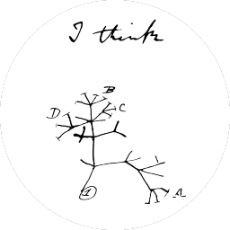

"I think" - Charles Darwin
Toggle notes and children with the icons. Scroll sideways to follow deeper branches.
Loading tree…
Enable JavaScript to load the tree and YAML files.
The source files, displayed as plain text in their folder order.